avengers
Os Vingadores começam, inicialmente, com Homem de Ferro, Incrível Hulk, Capitão América e o deus nórdico Thor!

iron man
Homem de Ferro (Iron Man) é um personagem dos quadrinhos publicados pela Marvel Comics!
Os Vingadores começam, inicialmente, com Homem de Ferro, Incrível Hulk, Capitão América e o deus nórdico Thor!
Homem de Ferro (Iron Man) é um personagem dos quadrinhos publicados pela Marvel Comics!
Os Vingadores começam, inicialmente, com Homem de Ferro, Incrível Hulk, Capitão América e o deus nórdico Thor!

Thor foi um importante deus presente na religiosidade dos nórdicos, povos que habitaram o norte da Europa!
Os Vingadores começam, inicialmente, com Homem de Ferro, Incrível Hulk, Capitão América e o deus nórdico Thor!

Parker foi mordido por uma aranha radioativa em uma exposição científica e adquire a agilidade de um aracnídeo!